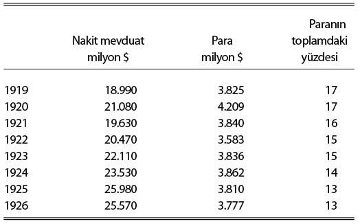

\1
II. Bölüm
Banka Parası
I. Banka Parasının “Yaratılışı”
Alacakların paraya çevrilmesinin (transference), işlemlerin tamamlanmasında bizzat paranın devredilmesi kadar işlevsel olabildiğini önceki bölümde gördük. O hâlde, toplum üyeleri bu güveni duyduklarında, nakde çevirmeyi aramaksızın, devredilebilir alacakları olmasını yeterli göreceklerdir. Kaldı ki banka parasıyla işlem yapmanın nakitle işlem yapmaya nazaran pek çok kolaylıkları ve birtakım avantajları vardır.
Modern banka, bu türden alışkanlıkların yerleşmesiyle varlık kazanmış bir kurumdur. Bankanın evriminde6 kıymetli madenlerle veya paranın bir yöreden diğerine havalesiyle ilgilenmek; borç düzenlemeye yönelik aracılık veya değerli eşya için kasa hizmetleri sunmak; itibarını kullanarak halktan topladığı tasarruflarla, takdiri ve riski kendine ait olacak şekilde yatırım yapmak gibi işler yer almış olabilir. Ancak biz modern tipte, tam anlamıyla gelişmiş, faal durumdaki bankalarla ilgileneceğiz.
İşte, böyle bir banka, paranın teslimiyle ilgili olarak –bundan sonra mevduat diyeceğimiz– yükümlülüğe iki şekilde girer. Bunlardan ilki, mevduat sahipleri lehine nakden veya –kendindeki ya da başka– bir bankadaki mevduat için transfer yetkisi veren emir (yani çek) olarak aldığı meblağ karşılığında girdiğidir. Kişiler bankaya ceplerinde nakitleriyle veya nakit karşılığını isteme hakkı tanıyan bir çekle gelirler ki bu da işleme koyabilecekleri ya da başkasına devredebilecekleri bir mevduat demektir.
Bununla birlikte bankanın kendini yükümlülüğe sokmasının ikinci bir yolu daha vardır. Banka, varlık satın alır, yani yatırımlarına ilave yapar, en azından ilk anda bir yükümlülüğe girerek karşılığını öder. Ayrıca, sonradan tazmin taahhüdü aldığı borçlu adına yükümlülüğe girebilir, yani kredi veya avans verebilir.7
Banka her iki durumda da mevduat yaratır. Fakat bunu da sadece kendi defter kayıtlarında, müşterinin nakden çekmesine veya çekiş hakkını başkasına devretmesine imkân sağlayarak yapabilir. Söz konusu iki durum arasında, bankanın mevduat yaratma saikinin yapısı dışında bir fark yoktur.
Bu da demektir ki faaliyet hâlindeki bir banka, bir yandan aldığı değerler için veya vaatler karşılığında devamlı olarak mevduat yaratırken, öte yandan da, nakit ya da başka bir bankaya havale şeklindeki talepleri karşılamak için mevduat iptal eder. Bu şekilde hem durmaksızın nakit alır ve nakit çıkışı yapar, hem de diğer bankalardan alacaklarını ister ve onların alacaklarını karşılar.
Bankanın, faaliyetlerini böyle karşıt işlemlerin birbirlerini yaklaşık olarak dengeleyebileceği –yani nakit günlük ödemelerin ve diğer bankaların taleplerini karşılayan miktarın, alınan nakit ve diğer bankalardan talep edilen miktardan fazlaca farklı olmayacağı– bir şekilde yürütmeye mecbur olduğu aşikârdır. Dolayısıyla, bankerin buradaki pratik meselesi, işlerinin idaresini, günlük olarak ortaya çıkan nakit ve hak talebi şeklindeki varlıklarını (assets), aynı türden yükümlülükleriyle (liabilities) elverdiğince eşit olacak şekilde yürütmekten ibarettir.
Bu da demektir ki bankanın ödünç vermek ve yatırım yapmak yoluyla emniyetli bir şekilde aktif olarak mevduat yaratabilme hızı, mudilerden likit kaynak alımı karşılığında pasif olarak mevduat yaratma hızı ile uygun bir ilişki içinde olmalıdır. Zira, ikincisinin sadece bir kısmının bile bankada tutulması bankanın rezervlerini artırırken, ilki, –sadece bir kısmı bile diğer bankaların müşterilerine ödense,– bankanın rezervlerini azaltır. Aslında, bu sonucu çok daha güçlü bir şekilde ifade edebilmemiz mümkündü. Çünkü, borç alan müşteriler, o sayede adlarına mevduat yaratılmasıyla, hemen başkalarına ödemek niyetiyle borçlanırlarken, mevduat getiren müşterilerde böyle bir niyet pek yoktur.
Bankerler, örneğin Dr. Walter Leaf, bundan, bir bütün olarak bankacılık sisteminde inisiyatifin mudilerde olduğunu ve bankaların mudilerce önceden bankaya emanet edilenden fazlasını borç veremeyecekleri sonucunu çıkarmaktadır. Gerçi sağduyuya da öyleymiş gibi geliyorsa da, iktisatçılar buna katılamazlar. Bu yüzden, kesinlikle karanlıkta kalmaması gereken bu meseleyi açıkça ortaya koymaya gayret edeceğim.8
Meseleyi çok sayıdaki bankadan sadece biri açısından bile görsek, bankanın pasif bir şekilde mevduat yaratma hızının, kısmen aktif olarak mevduat yaratma hızına bağlı olduğu açıktır. Zira, borç alan müşteriler muhtemelen borçtan geleni (proceeds of loan) ivedilikle başkalarına ödeseler de, ödedikleri kişilerden bazıları, aynı bankanın mevduat sahibi müşterileridir. Eğer böyleyse, aktif biçimde yaratılan mevduatın pasif olarak yaratılandan türemesi bir yana, durum bunun tam tersidir. Bu, az biraz da olsa bankacılık sisteminin bütünündeki durumu gösterir. Çünkü borç alan müşterilerin, mevduatlarını diğer bankaların müşterilerine ödemeleri ölçüsünde, bu bankalar kendilerini, o ilk bankanın zayıflaması ölçüsünde, pasif olarak yaratılan mevduatları ile güçlenmiş durumda bulacaklardır. Aynı şekilde, o, bizim banka da, diğer bankaların aktif olarak mevduat yarattıkları her durumda, kendini güçlenmiş bulacaktır. Öyle ki söz konusu bankanın pasif olarak yaratılan mevduatlarının bir kısmı, aktif olarak yaratılan mevduatlarının sonucu olmadığı zaman bile, başka bankaların aktif biçimde yaratılan mevduatlarının sonucudur.
Tüm ödemelerin çekle yapıldığı, nakdin kullanılmadığı, dış dünyayla ilişkileri olmayan, kapalı bir bankacılık sistemi farz edersek ve bir de bankaların bu şartlar altında nakit tutmayı gerekli bulmayacaklarını, aralarındaki (inter-bank) borçları diğer varlıkların transferiyle kapattıklarını varsayarsak, bu durumda, hepsinin uyumlu bir şekilde ilerlemeleri şartıyla, bankaların güvenle yaratabilecekleri banka parası miktarının bir sınırı olmayacağı ortadadır. İtalik kelimeler, sistemin davranışı konusunda yol göstericidir. Tek bankanın yaptığı her ileri hamle zayıflatıcıdır, oysa komşusu olan bankalarca yapılan her bir ileri hamle güçlendiricidir. Öyle ki hepsi ileri hamle yaparsa, hiçbirinin dengesi bozulmaz. Böylece her bankanın davranışı, diğerlerini bir adımdan fazla geçmesine imkân vermemekle birlikte, bankalar bütününün ortalama davranışına tabi olacaktır, tabii ortalamaya katkının payı büyük veya küçük olabilir. Her bankanın başkan koltuğundaki kişi, kendini asla kontrol edemediği dış güçlerin edilgen bir enstrümanı olarak görebilir; bununla birlikte bu “dış güçler” sadece kendisinden ve başkan yardımcısından ibaret olabilir; bu güçler kesinlikle mevduat sahipleri değildir.
Bu türden bir parasal sistem yapısal bir istikrarsızlık taşıyacaktır. Bankaların çoğunun davranışını –geri ya da ileri olsun– aynı yönde etkilemesi muhtemel herhangi bir olay hiçbir dirençle karşılaşmayacak, bütün sistemde şiddetli bir harekete yol açacak güçte olacaktır. Yürürlükteki parasal sistemlerin genellikle bu kadar kötü olmadığını, kendi yapısal istikrarsızlıkları üzerinde denetimler geliştirdiklerini göreceğiz. Bununla birlikte, bir bankacılık sisteminin tek tek unsurları açısından bu öykünmeli hareket (sympathetic movement) bir ölçüye kadar daima mevcuttur ve hesaba katılması şarttır. Ayrıca, örneğin, kâğıt parası konvertibl olmayan bir ülke veya bütün dünya gibi “kapalı” bir sistem için gerekler yerine geldiğinde, öykünmeli hareketten kaynaklanan istikrarsızlık eğilimi, pratik açıdan en yüksek öneme sahip bir karakteristiktir.
Ele alınan farazi durumda tüm ödemelerin çekle yapıldığını, üye bankalar için nakit rezerv tutma zaruretinin veya mecburiyetinin olmadığını varsaymıştık. Artık bu sınırlamaları kaldırmamız gerekir. Bazı ödemelerin nakden yapılması hâlinde, bu amaçla kullanılan nakit miktarı, banka parasının genellikle az ya da çok kararlı bir oranı olacaktır. Bu durumda, bankalar bütününce daha fazla banka parası yaratılması, nakdin bankalar bütününden dışarı akmasına yol açar ve bu da, bir nakit artışının kontrolünü elde tutacak konumda olmamaları hâlinde, bankaların banka parası yaratabilme imkânını sınırlandırır.
Fakat bir bankerin nakit ihtiyacı, sırf bu seçenekten kaynaklanmaz. Komşularıyla uyum içindeyken bile, kendisinin alacaklarıyla onların alacakları günden güne farlılıklar gösterir ve bunların büyüklüğü, kısmen, bankerin işlerinin boyutuna bağlıdır ki kabaca mevduat hacmiyle ölçülür. Dolayısıyla, bir banker kısa vadede ortaya çıkması kaçınılmaz minör sapmalarla baş edebilmek için, kısmen nakit, kısmen de diğer banka ya da bankalar mevduatı biçiminde, elde bir miktar likit kaynak bulundurmak durumundadır, “rezervler” denilen bu kaynaklar, bankerdeki mevduatın hacmiyle alçalıp yükselir ve kanun ya da teamül gereğince o mevduatın belirli bir oranıdır. Aralarındaki taleplerle ilgilenmek için bankalar, Takas Odası (Clearing House) adı verilen bir ofis oluşturmuştur. Burada, hangi bankaların hangi bankalara ödeyeceği bakiyeler hesaplanır. Ortaya çıkacak farkları kapatmak için gerektiğinde nakit kullanılması da mümkündür. Ancak bankalar, alışılmış bir yöntem olarak, günlük hesapların kapatılmasında, çoğunlukla merkez veya Devlet bankası olan seçilmiş bir bankanın –bazen tabir edilen şekliyle bankaların bankasının– alacağını esas alırlar. Kaldı ki bir merkez bankası mevduatı, sadece Takas Odası’ndaki farklılıkları gidermekle kalmaz, bir bankanın rezervlerindeki nakit payının ikmali için nakde de çevrilebilir.
Bu yüzden, bir bankanın, öncelikle, ne miktarda rezervin makul olacağına karar vermesi gerekir ya da bu mesele bazen kanunla belirlenir. Detaylarına ikinci ciltte gireceğimiz bu rakam, kısmen ülkenin ve dönemin uygulamalarının ve bankaların belli başlı müşterileri olan iş dünyasının şekillendirdiği mevduat alışkanlıklarına bağlıyken, kısmen de bankanın –bu amaçla, genellikle topladığı mevduat miktarıyla tarif edilen– ölçeğine bağlıdır. Böylelikle her banka, topladığı mevduatın kendince belirleyeceği bir payını (örneğin yüzde 10’unu) rezerv olarak tutmaya karar verir, tabii bu pay, kanunla bir örnek kılınmış değilse, başka bankaların paylarıyla aynı olmayabileceği gibi döneme ya da mevsime göre farklılıklar gösterebilir. Pay sabit olduğunda, banka, mümkün olandan daha az kârlı iş yaptığı anlamına geleceği için, rezervlerinin bu payın üstüne çıkmasını istemeyeceği gibi, altına inmesini de istemeyecektir. Sonuçta banka, rezervlerinin –günlük dalgalanmalar dışında– azalma ve artma eğilimi göstermesine göre, küçük ya da büyük ölçekte borç vermek yahut yatırım yapmak yoluyla aktif biçimde mevduat yaratacaktır.
Bu noktada anlıyoruz ki sadece uyumu korumaları yolunda tek tek bankalar üzerindeki kontrolden başka, bankalar bütünü üzerinde de bir kontrol var. Zira, bankalar bütününün rezervlerin bir bütün olarak çok fazla düşmesine neden olacak bir süratle mevduat yaratması hâlinde, bazı bankerler kendi rezerv oranlarını eksik (deficient) bulup bir adım çekilmeye mecbur kalırken, toplam mevduatın rezervlere oranının normalin altına düşmesi hâlinde, bu kez bazı bankalar kendi rezerv oranlarını yüksek (excessive) bulacak ve bir adım ileri gitmek için uyarılmış olacaklardır. O hâlde, bir bütün olarak bankacılık sisteminin ortak “hızını” tayin eden şey, rezerv kaynaklarının toplamı olmaktadır.
Üye bankaların toplam rezerv kaynaklarını neyin tayin ettiğini keşfetme konusundaki tezi daha öteye taşımak, izleyen bölümler hakkında önden konuşmak anlamına gelir. Bununla birlikte meselenin unsurlarını burada gösterebiliriz.
Banknot ihracının merkez bankasının yetkisinde olduğu varsayıldığında, üye bankaların toplam rezerv kaynakları merkez bankasının denetiminde olur, ancak burada merkez bankasının kendi toplam mevduatını ve banknot ihracını kontrol edebilmesi şarttır. Bu durumda merkez bankası orkestra şefi olur ve tempoyu belirler. Bununla birlikte, bizzat merkez bankasınca yaratılan mevduat miktarı, kanunla ya da gelenekle kendisi dışında, katı kurallarla düzenlenerek belirleniyor olabilir. İşte böyle bir durumda “otomatik” bir sistemden bahsetmek mümkündür. Son olarak, üye bankalar merkez bankasındaki mevduatlarını ya da merkez bankasının banknot ihraç birimlerinden çekecekleri banknot miktarını istedikleri gibi artırmakta, sınırlı da olsa, belli bir güce sahip olabilirler. Böyle bir durumda üye bankalar, kendi besinlerini rezerv kaynaklarının artışı biçiminde temin etmeye yönelecekleri için, öykünmeli hareketler güçlenecek, bunun sonucu olarak da sistemin yapısal istikrarsızlığını zapt etmek zorlaşacaktır.
Buraya kadar, banka mevduatlarının kimler tarafından ve nasıl “yaratıldığı” konusunda, malum münakaşanın biraz gerçek dışı olduğunu sergilemek amacıyla, yeterince şey söylemeye gayret ettim. Aslında mevduatların, en dolaysız ifadesiyle, tutuldukları bankalarca yaratıldığına dair hiçbir şüphe olamaz. Zaten mevzu da kesinlikle, bankaların, yaratılması için mudilerin kendi iradeleriyle nakit yahut çek getirmelerini gerektiren türden bir mevduatla sınırlı olmaları değildir. Öte yandan, bir bankanın kendi inisiyatifiyle mevduat yaratma hızının belirli kurallara ve sınırlamalara tabi olduğu da bir o kadar açıktır, banka diğer bankalarla uyumunu sürdürmek zorundadır ve kendindeki mevduatın toplam mevduat içindeki oranını bankacılık sektöründeki kotasının üstüne çıkaramaz. Ayrıca, tüm üye bankalar için ortak olan “sürat”, hepsinin rezerv kaynaklarının toplamınca belirlenir.
II. Cari Para Ağırlıklı Olarak Banka Parasıdır
Yukarıdaki gibi yaratılan Devlet parasının ve üye bankalar parasının cari para toplamındaki oransal büyüklükleri, parasal pratiğin gelişiminde ulaşılan evre itibarıyla ülkelere ve dönemlere göre ciddi şekilde değişir. Ancak eğilim, ağırlıklı olarak –Büyük Britanya ve Birleşik Devletler gibi ülkelerde toplam cari paranın belki de onda dokuzunu oluşturan– banka parası yönündedir, Devlet parası bariz bir şekilde ikincil konumdadır.
Bu çerçevede, sadece tüm merkez bankası parasının üye bankaların elinde tutulduğunu değil, fakat halkın elindeki tüm cari paranın da banka parası, yani banka mevduatı olduğunu varsaymak, tezimizin genelliğini yitirmeden sadeleşmesini sağlayacaktır. Bu sadeleştirilmiş versiyon gerçek durumu elbette aksettirmez; ancak, bir dolu gereksiz sözden kurtaracağı gibi, gerçek durumlara uyarlanması da kolayca mümkündür. Kaldı ki böyle bir varsayımın sonuçları, toplam Devlet parası stoğunun halka, üye bankalara ve merkez bankasına düşen payları sabit olmaya yüz tuttuğu ölçüde, gerçek durumlarla hemen hemen özdeş olacaktır. Ayrıca, fiiliyatın bu sadeleştirilmiş şemadan farklı olduğu hâlleri tabloya yansıtmak için de elimden geleni yapacağım.
Birleşik Devletler’deki vadesiz (demand) –ya da benim kullanacağım ismiyle nakit (cash)– mevduatın, bankalar dışında ve halkın elinde bulunan dolaşımdaki madeni para ve banknotlar itibarıyla oranına yönelik aşağıdaki tahminler epeyce doğrudur:
BİRLEŞİK DEVLETLER9

Böylece, savaşı izleyen sekiz yıl boyunca bile, Birleşik Devletler’de fiili nakdin toplam nakit ile nakit mevduat toplamındaki payı altıda birden sekizde bire kadar düştü. Bundan sonra göreceğimiz gibi nakit mevduatın –nakitten çok daha hızlı dönmesi sebebiyle– gerçekleşen ödemeler hacmi cinsinden önemi çok daha fazla olurdu. Buna vadeli mevduatı da katarsak, halkın elindeki devlet parasının cari paranın yüzde 10’undan daha az olduğunu görürüz.
Büyük Britanya’yla ilgili olarak çok daha güvenilmez tahminlere sahibiz. Bununla birlikte 1926-8 arası için, Büyük Britanya’daki nakit mevduatların (sabit –fixed– mevduatlar hariç) 1.075 milyon ve halkın elinde dolaşan banknotların 250 milyon paund olduğunu tahmin ediyorum. Bu durumda, ikinci kalemin toplamdaki payı yüzde 19, ya da yuvarlak olarak beşte bir idi. Sabit mevduatı da katınca, Birleşik Devletler’de olduğu gibi, halkın elindeki Devlet parasının, cari paranın yüzde 10’u civarında olduğunu görürüz.
Dolayısıyla, banka parasının kullanımı Büyük Britan-ya’da ve Birleşik Devletler’de –ve hızla başka ülkelerde de– öyle baskındır ki banka parasına sıradan (typical) ve diğer para türlerine ikinci derece muamelesi yapmak, Devlet parasına genel ve banka parasına da tali komplikasyon muamelesi yapmaktan çok daha az karışıklık yaratacaktır. Olguları dışlamak demek olan ikinci tutum, modern paranın en yaygın bazı özelliklerinin yeterince vurgulanmamasına ve temel niteliklerinin de istisna yahut normal dışı olarak görülmesine yol açmaktadır.
6 İngiltere’deki kökenleri için bakınız R.D. Richards, The Pioneers of Banking in England (Economic Journal History Supplement, January 1929)
7 Benzer bir ayrım, Profesör C.S. Phillips tarafından “birincil” (primary) ve “türev” (derivative) mevduat terimleri şeklinde yapılmaktadır.
8 Bu noktayı açıklığa kavuşturma yönünden iyi bir girişim olarak bkz.: F. W. Crick, “The Genesis of Bank Deposits”, Economica, June 1927. Ayrıca, bu bölüm başlığının yine yetkin ancak teferruatlı bir değerlendirmesi için bkz.: Professor C.A Phillips, Bank Credit.
9 Vadesiz mevduat değerleri Mitchell’ın Business Cycles s.26’dan; bankalar harici dolaşımdaki para rakamları da The Review of Economic Statistics, July 1927, s.136’dan alınmıştır.